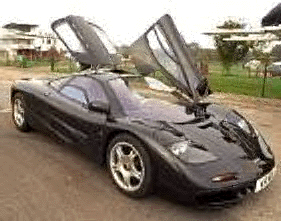

Mclaren F1

Specs(Mclaren F1 / LM version)
Price |
$1,130,000 / more |
Top Speed |
231mph (record 240.1mph !!) / 225mph |
Acceleration |
|
Engine |
|
0-30mph |
1.8sec / N/A |
Type |
V12 w/ Variable intake valve timing, 48valve Quad cam /same |
0-60mph |
3.2sec / 2.9sec |
Displacement |
6.1L(6064cc) / same |
0-100 |
6.3sec / N/A |
Power |
627hp@7300rpm / 668hp@7400rpm !! |
1/4 mile |
11.1sec/138.0mph / N/A |
Torque |
479 lbs-ft@4000rpm / 520 lbs-ft@4500rpm |
Weight |
2,245 lbs / 2,113 lbs |
Handling |
|
Gas mileage |
12.4mpg / same |
Skidpad |
N/A |
City |
N/A |
600ft slalom |
N/A |
Highway |
N/A |
Powertrain |
Mid-engined, rear wheel drive, 6 speed manual / same |
(? = incomplete data or unverified info, N/A = info Not Available)
Beyond the specs:
There is no car on earth like it, no car ever produced for road use ever can match it, it is the "Ultimate Supercar". For a price in excess of $1 million it had better be, with acceleration numbers unmatched by any road car and a top speed that is even more far impressive (remember that 240mph is the record for CART racing!). This car is very safe with a carbon fiber survival shell, it only complaints in the area of safety are the rumors that claim it is not stable at high speeds. Still this car even for a million is an ok deal since only 100 were made and it has a unique front center driving position with two passenger seats placed slightly behind and to the side of the driver. This is one amazing car, and surprisingly it is street legal in the US with its amazing BMW built V12. The awesome Mclaren F1 was made in an even faster accelerating 668hp version called the Mclaren F1 LM in celebration of the Le Mans victory of the Mclaren F1 GTR. However, the LM version has a slower top speed due to the large rear spoiler, though it does not move like the smaller one on the regular version. The regular Mclaren F1 spoiler however raises under braking to prevent the car from diving under hard braking and improving braking from high speeds. It just blows away its cheaper competition performance wise, like the Jaguar XJ220, the Bugatti EB110, and at the lower end the Ferrari F50. This car is only for the extremely rich who are not paranoid of theft (it would just be a terrible waste to just let it collect dust), and thirst for performance but can exercise control.
~Oracle